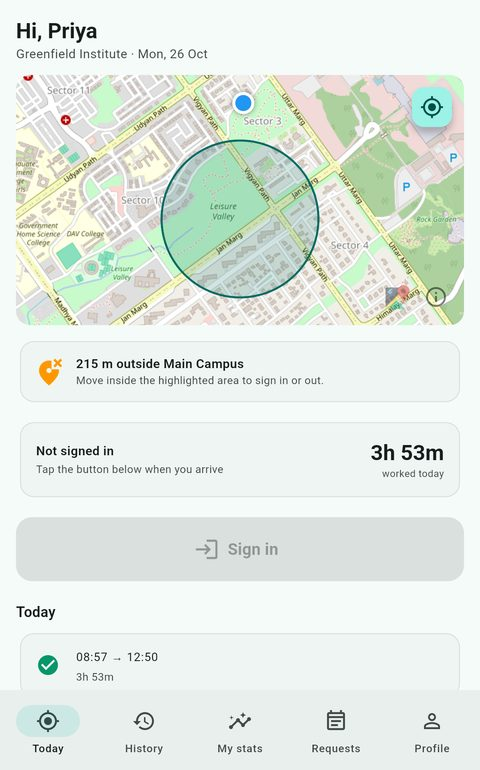
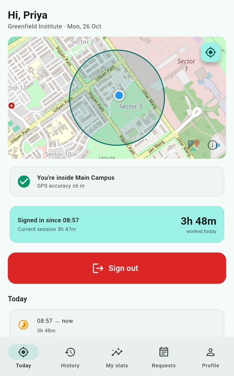
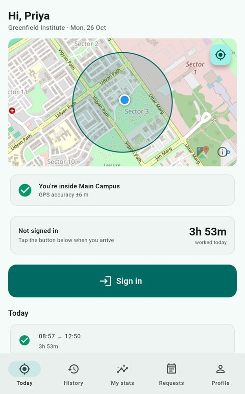
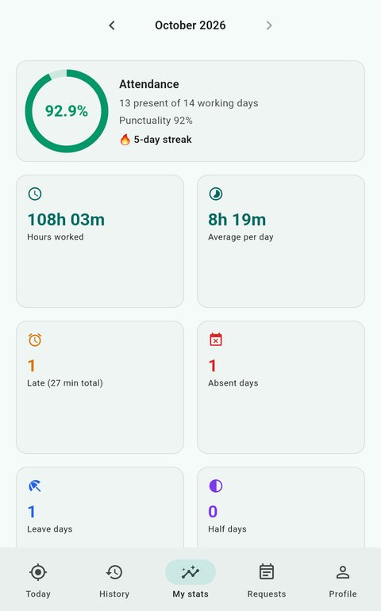
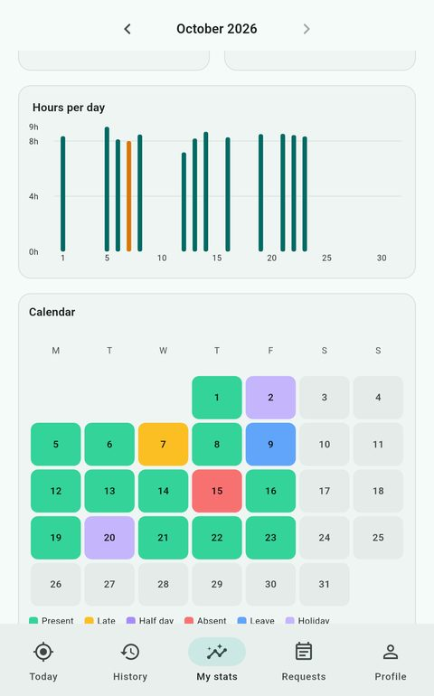
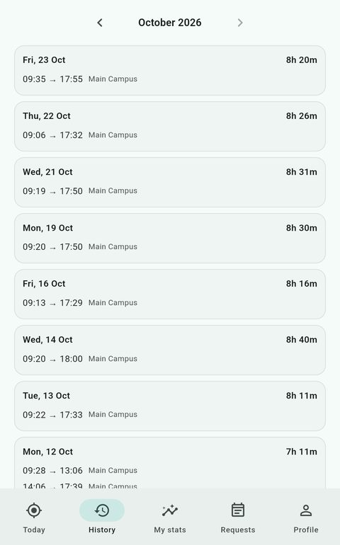
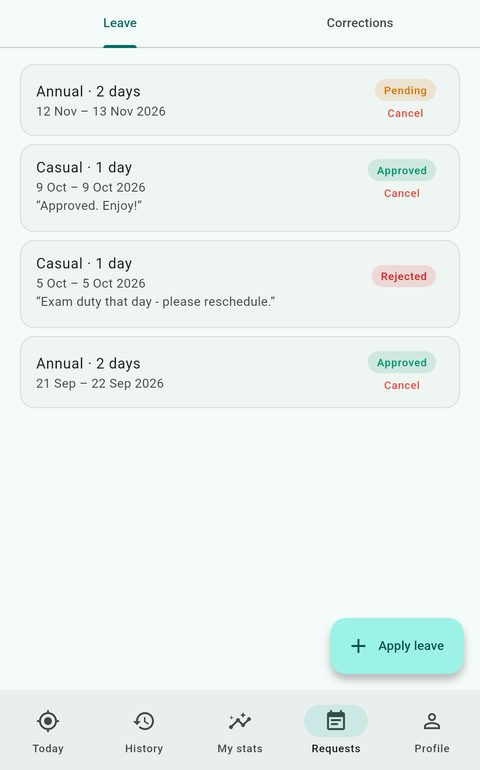
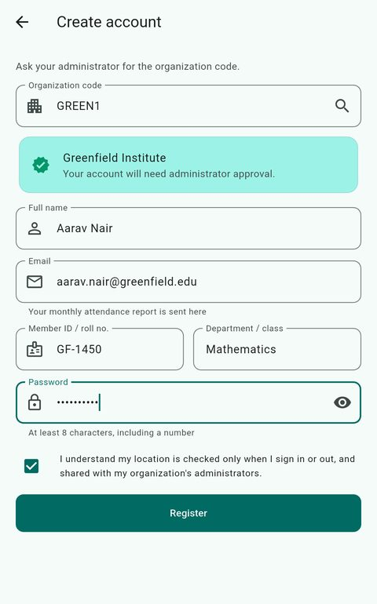
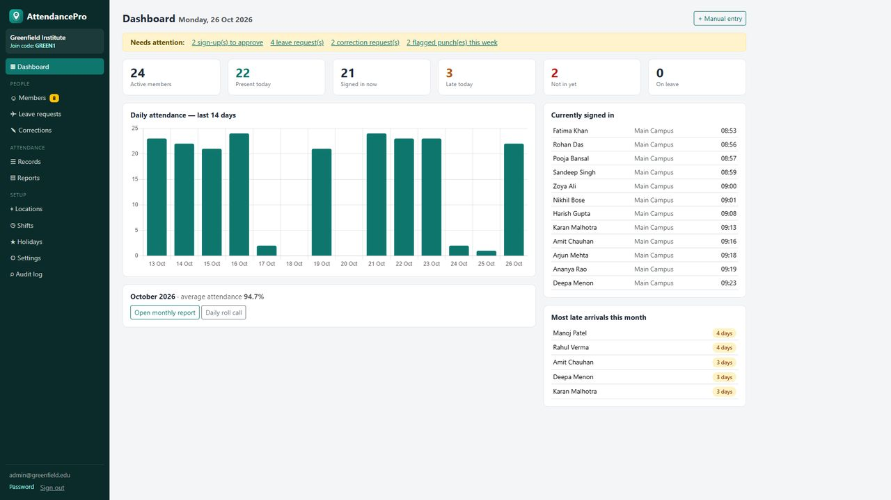
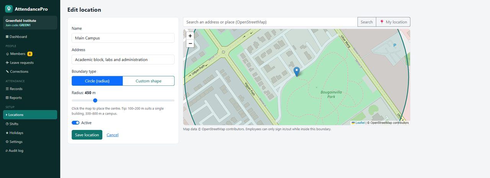

Geofenced attendance · Companies · Schools · Colleges
Attendance that only counts
where it should.
AttendancePro lets your people sign in and out only inside the areas you draw on a map. The server checks every punch, so your records are trustworthy — without paper registers, swipe cards or extra hardware.
Android app for members · Web portal for admins · Your data stays on your server


How it works
Set it up in an afternoon.
No hardware to install and nothing to scan. You draw the boundary, share a code, and attendance records itself.
Draw your boundary
Open the admin portal, search your address and draw a circle or a custom shape on the map. Add as many locations as you need — campuses, branches, sites.
Share your join code
Members install the Android app and register with your organization's code. You approve sign-ups, assign shifts and locations, or let people in automatically.
Attendance takes care of itself
People sign in and out on site. You get live status, personal statistics for each member, and monthly reports without lifting a finger.
For members
Simple for the people who use it every day.
One clear screen shows where you are, whether you're in range, and how long you've worked. Everything else is a tap away.






Screens show sample data for a fictional organization.
For admins
See attendance the moment it happens.
A live dashboard shows who's present, late, signed in right now or on leave. Drill into any member, any day or any location — and export what you need.
- Dashboard with present, late, signed-in-now, on-leave and 14-day trends
- Member profiles with calendar, hours, punctuality and full history
- Shifts with grace periods, working days and holidays
- Approve leave and attendance corrections in one click
- Monthly organization report with CSV export and print view
- Audit log of every admin action


Geofencing
Draw the boundary. Done.
Search an address, drop a pin and set the radius — or trace a custom outline around buildings, grounds or a whole campus. Maps are powered by OpenStreetMap, so there are no map licence fees.
- Circles or free-form shapes, any number of locations
- Assign people to specific locations, or allow any
- Tolerance and GPS-accuracy limits you control
Safeguards
Built so records can be trusted.
The phone never gets the final say. Every punch is re-checked on the server, and anything unusual is flagged for a human to review.
Location verified on the server
The boundary check, GPS-accuracy limit and time check happen server-side, not just in the app.
Fake-GPS detection
Mock-location use on Android is detected and can be blocked. Suspicious patterns, like impossible travel, are flagged for review.
One phone per account
Accounts can be linked to a single device to stop buddy punching. Admins can reset a device when someone changes phones.
Works with poor signal
If the connection drops, a punch is saved on the phone with its timestamp and synced automatically — re-validated by the server.
Optional selfie check
Require a selfie with each punch for sensitive sites. Photos are stored privately and shown only to admins; no face recognition is used.
Audit trail
Manual edits, approvals, exports and settings changes are all recorded with who did what, and when.
No location system can make GPS completely tamper-proof. AttendancePro layers several checks and surfaces suspicious punches so you can decide.
Who it's for
One product, many kinds of organization.
The wording, shifts and locations adapt to how you work.
🏢 Companies & offices
Multiple branches, flexible shifts, grace periods, and monthly reports for HR and payroll preparation.
🎓 Schools & colleges
Staff — and students where you choose — sign in on campus. Department views, holidays and leave handled in one place.
🏥 Clinics, retail & field teams
Site-by-site attendance for shops, clinics, facilities and teams working across several locations.
Questions
Good to know.
What does a member need?
An Android phone with location turned on, the AttendancePro app and your organization's join code. They sign in and out only while inside an allowed location.
Does it work on iPhone?
The member app is Android today. Admins use the web portal from any browser on a computer, tablet or phone.
Where is our data stored?
AttendancePro is deployed on a server you control, so records stay with your organization. See our privacy policy for exactly what the app collects.
Does it track people all day?
No. Location is read only while the app is open on screen (to show whether you're in range) and at the moment someone signs in or out. The app never asks for background location.
What if someone forgets to sign out or their phone dies?
Members can send a correction request that admins approve, and sessions left open overnight are closed automatically and flagged for review.
How much does it cost?
Get in touch and we'll walk you through options for your organization's size.
See it with your own boundary.
Tell us about your organization and we'll set up a walkthrough — draw your campus on the map and try a sign-in.